-
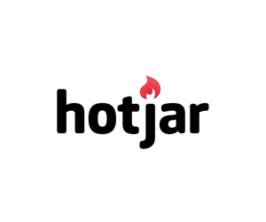 用户行为采集工具，点击热图，表格放弃率，在线调查，问卷制作等等。 Hotjar -
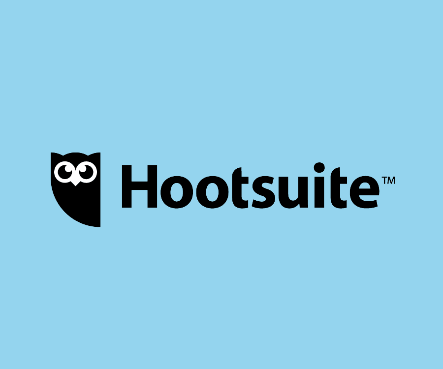 可能是最好用的社交营销工具，支持几乎所有主流平台及几百个扩展应用。 Hootsuite -
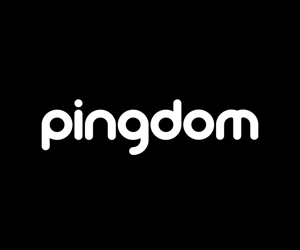 最初的功能是监测网站是否正常连接，如果服务器挂掉，立马短信和邮件通知你，现在添加一些数据分析功能。 Pingdom -
集成订阅名单管理，邮件制作，邮件发送功能，我自己一直在用的EDM工具。 MailChimp -
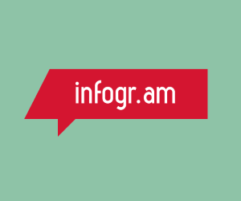 制作信息图表Infographic，提供一些模板及各种零部件。 infogr.am -
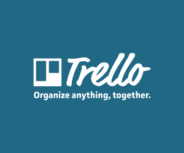 用户量非常庞大的团队协作及任务管理工具，众多模仿者。 Trello -
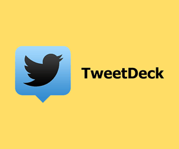 专注于Twitter的营销工具。 Placeit -
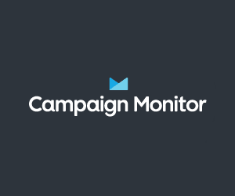 名单管理，邮件发送等功能没有免费的plan，但是提供模板制作，标题测试等免费工具。 Campaign Monitor -
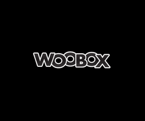 主打FB的各种配套功能，充分利用FB Page上的Apps来做营销。现在也扩充了其他社交平台的一些功能。 Business Card Maker -
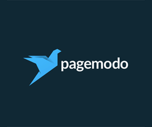 主打图片设计的社交营销工具，轻松设计社交平台头图背景图。 Design Rails -
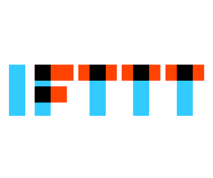 工作自动化神器，几百个扩展可以搭配出成千上万个组合，帮你自动完成各种机械化工作。 IFTTT -
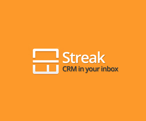 各大Gmail插件里面最喜欢的一款。结合了邮件追踪，发送管理，CRM等等。CRM功能尤其强大。 Streak -
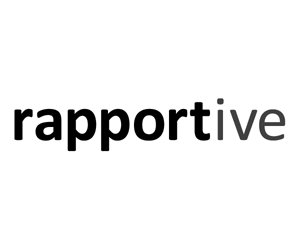 自动找出你的发件对象的LinkedIn页面，以及其他的社交页面。 Rapportive -
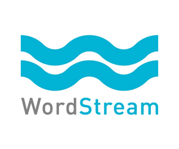 提供比较专业的PPC软件和服务，另外免费提供一些找关键词的小工具。 WordStream -
老牌且功能强大的关键词挖掘，竞争对手分析，网站数据监测分析工具。 SEMrush -
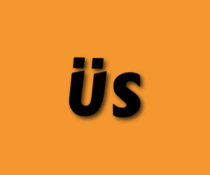 抓取Google关键词自动推荐的工具，最近把中国IP封掉了，访问需科学上网。 Ubersuggest -
正常工作已经离不开它了，科学上网神器。每月10块，稳定不限流量。 红杏 -
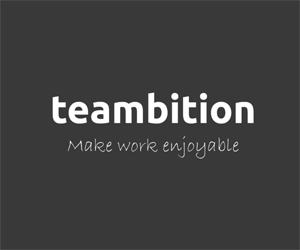 Trello的中国版，使用也挺简便，我的团队现在已经主要用他们了。 TeamBition -
比较老牌的综合型SEO工具，难得的是一直在坚持改版和推出新的实用功能。 ahrefs -
快速查找竞争对手的在线小工具，虽说不是完全准确，但是做到个七八成还是没问题的。 Similar Site Search -
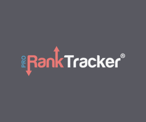 追关键词排名，免费版也够用了，每天发邮件报告。 Pro Rank Tracker -
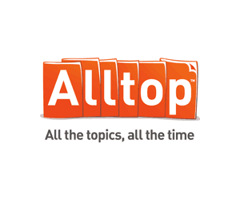 汇聚国外各大资讯网站的热门新闻，从而挖掘热门题材并创作相应的内容。 AllTop -
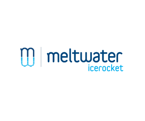 通过关键词查找最近在各大博客平台和社交平台的相关热门内容。 IceRocket -
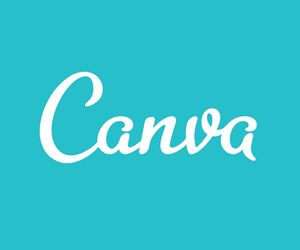 傻瓜式的图片制作工具，主要是应用于网络营销的图片，如网页焦点图，社交页面背景图，宣传海报等。 Canva -
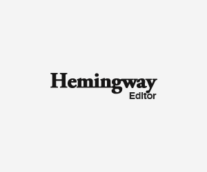 检查英文文章的语法拼写等问题，以及对读者不太友好难以理解的句子。 Hemingway -
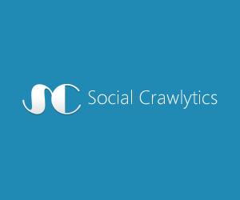 用来抓取任意网站上被分享次数最多的页面，我用他来调查竞争对手，以及获取内容创作主题。 Social Crawlytics -
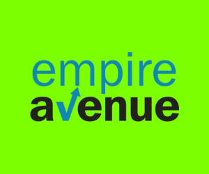 让别人帮你去社交平台点赞/评论/分享，但是“钱”是这网站上的虚拟货币，我把他当作临时水军雇佣平台。 Magic Mockups -
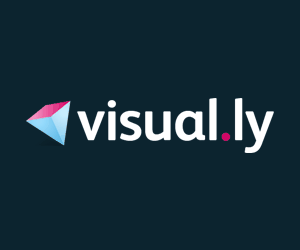 数据可视化工具，制作信息图标很方便，内置一个连接GA的功能，每周把GA数据制成信息图标发给你。 Visual.ly -
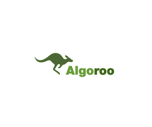 DEJAN旗下的算法波动追踪工具，最新版提供邮件提醒功能。 Algoroo -
Moz旗下的算法波动监测工具，与Algoroo偶有出入，所以有必要结合来看。 Mozcast -
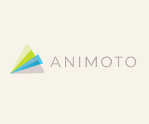 在线视频制作工具，当然和绘声绘影,Premiere这类专业工具没法比。胜在易用，并且提供一系列模板。 Animoto -
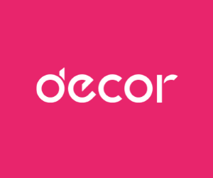 专业制作Facebook粉丝专业的工具， decor.io -
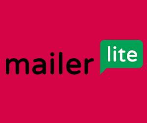 也是邮件管理设计发送工具，不喜欢Mailchimp或者CampaignMonitor的试试这个。 MailerLite -
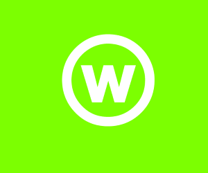 没有专门的设计师然后又需要Logo？试试这个吧。 Withoomph -
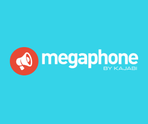 轻松创建各种类型的着陆页。 Megaphone -
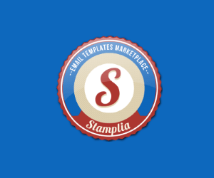 免费的邮件模板制作工具，成果可以直接导出到Mailchimp和Campaign Monitor。漂亮一些的模板是收费的。 Stamplia -
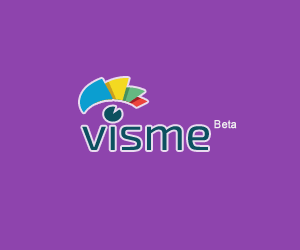 另一款强大的图表/视频/幻灯片/图片/报表/简历制作工具。 Visme -
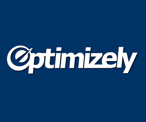 业内最有名的A/B测试工具。 Optimizely -
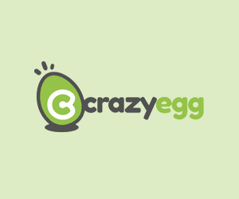 业内最有名的页面点击热图生成工具。 Crazy Egg -
出售各类CMS模板，需要WP/Magento/Zencart/HTML模板的时候到这来，多半不会失望。 Crazy Egg -
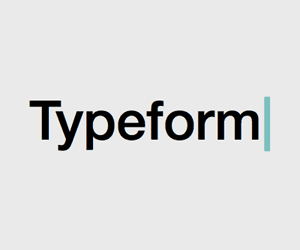 制作各类在线表单：用户调研，小测试，联系我们，支付，等等。 Typeform -
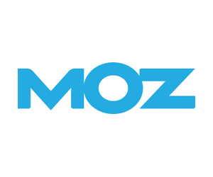 业内顶尖的一站式SEO工具解决方案，同时他们的博客质量很高。 Typeform -
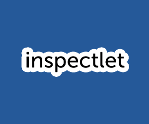 录屏的方式观看用户在网站上的实际操作行为。 Inspectlet -
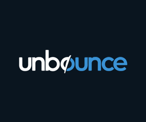 集着陆页制作，A/B测试为一体，提供了很多拿来即用的模板。同时他们撰写的关于转化率优化的博客文章也都不错。 Unbounce -
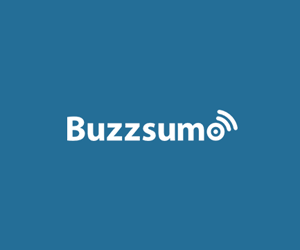 高级版的IceRocket，结果当然也更靠谱更有指导性，就是没有Free Plan。 Buzzsumo -
放了Moz放了Ahrefs不放MajesticSEO貌似有点说不过去。最近也是和Moz一样，把后面的SEO去掉了。 Majestic -
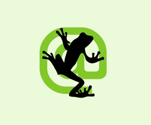 如果选一个桌面端的SEO相关软件，这个是我第一个会选的。简单来看是检查全站页面，实际上功能非常强大。 Majestic -
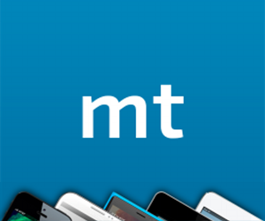 检查网站在移动端兼容性的在线工具。可选的设备比较全。 Mobiletest.Me -
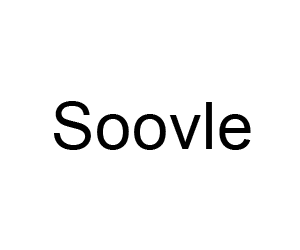 类似于Ubersuggest，但是综合了包括amazon, wiki等在内的关键词库。 Soovle -
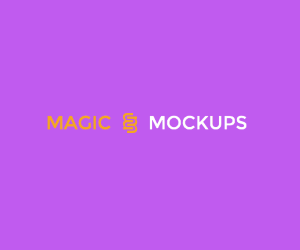 快速生成产品在Mac/iOS设备上的预览图，逼格满满的。 Magic Mockups -
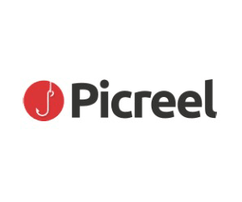 探测用户的退出意图然后弹出浮窗的工具，根据我们的实际试用效果，对于转化率有至少20%贡献。 Picreel -
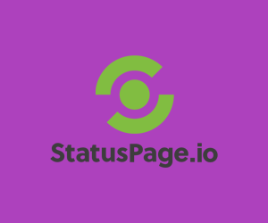 Statuspage出品的一个免费小工具，快速生成一个稍微美观一点的404/503等错误页面。HTML直接发到你邮箱。 Statuspage -
更注重于移动端的Landing Page制作，目前还在beta测试阶段，可以尝鲜。 Undelay -
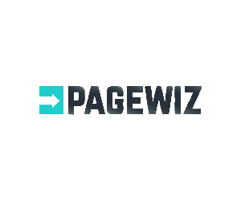 包括飞利浦,Zara等公司在使用的着陆页制作工具，除了强大的模板和设计模块，还包含了A/B测试功能。 Pagewiz -
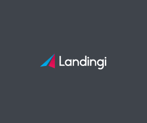 该有的功能都有，中规中矩的一款着陆页制作工具。有Free Plan，同时收费Plan也有一定价格优势。 Landingi -
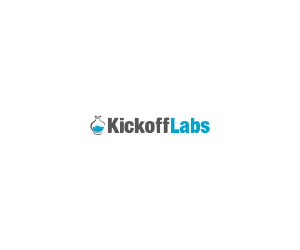 我觉得我已经想不出新的花样来介绍了，如果你已经看了其他的着陆页工具，这个也有必要看一下，货比三家嘛。 Kickoff Labs -
最近开始在公司开始使用的EDM服务，已经取代Mailchimp了。更便宜，API多。 Send Grid -
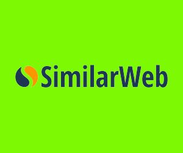 米课的朋友推荐的，和Alexa,SEMRush功能类似，发现和分析竞争对手的工具。 SimilarWeb -
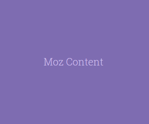 Moz新推出的内容营销工具，免费版可以根据关键词找热门内容。付费版功能更多。 Moz Content -
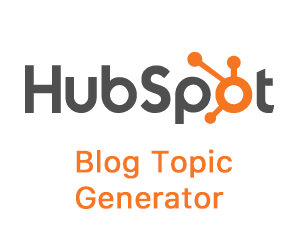 Hubspot推出的找话题工具，给出1-3个关键词，告诉你最近相关的热门标题。 Hubspot's blog topic generator -
根据关键词推荐话题的工具，比较适合标题党，出来的标题都比较夺人眼球。 Portent's title maker
肯定还有一堆好工具我都没用过甚至没听说过，所以，欢迎跟我推荐你用过的好东西。通过微博或者邮件找我都行。
想要第一时间收到新的推荐工具通知？请订阅邮件，同时你还会收到我不定期的关于digital marketing的内容推送。
如果这是你第一次到我的网站，欢迎去看看我的博客，里面写的都是Google SEO和海外网络营销的文章。
这个项目的源码来自 Saijo George，在获取他的授权后，我在源码基础上编写了这个小产品。
感谢婵猫。